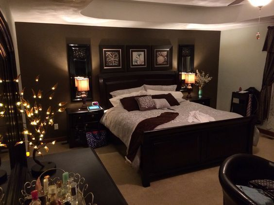
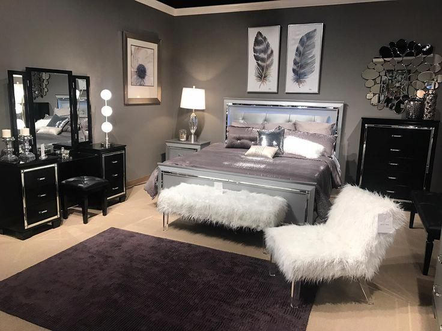

Creative ideas
I like my comfy bedroom because it is very unique to me and what I like. The colour and brightness are perfect in mostly every way possible. It is my favourite part of my house because I can do what I like in there, and yet not get disturbed. The best part of my room is the furniture and layout. The size of my bedroom is the smallest out of the rest of my families rooms, but I can still fit in everything I need into it. I have a bed right in the middle of my squarish room, which takes up quite a bit of space, but I like it that way. You may find me laying there reading a book in the natural light coming through my window, which is my main source of light. The storage is great because it is hidden away above my wardrobe, which is built into the wall, although most of my stuff goes under the bed. There is a big black shoebox beside my bed which fits all my shoes in it. There is a mirror hanging on my off white walls above a small table. Next to them I have tall, white draws bulging with clothes. I have a white bedside table with an alarm clock, a rose red touch lamp, and a blue bluetooth speaker.
Industrial designs that make use of concrete may be all the rage in some circles,
but the fact is that you will have difficulty finding any beautiful home that does not use
wood
elements.
A popular building material that is just as effective in decorative use,
wood brings an automatic warmth and coziness to even a modern space.
The four homes featured in this post take a love of wood to another level.
Not only are beautiful hardwood floors found throughout, but the natural grain carries up
across
the walls,
into shelving units, cabinetry, and even across ceilings. The resulting style is lovely,
bright, and welcoming in each case.

1st design
A general knowledge led to the assumption that bed rest is beneficial for most illnesses and bed rest is prescribed in a large number of medical conditions. However, evidence from randomised studies and systematic reviews suggest a potentially harmful effect of bed rest. This review article discusses the utility of bed rest in some frequent medical pathologies such as myocardial infarction, pulmonary embolism, community acquired-pneumonia, and low back pain.

2nd design
A general knowledge led to the assumption that bed rest is beneficial for most illnesses and bed rest is prescribed in a large number of medical conditions. However, evidence from randomised studies and systematic reviews suggest a potentially harmful effect of bed rest. This review article discusses the utility of bed rest in some frequent medical pathologies such as myocardial infarction, pulmonary embolism, community acquired-pneumonia, and low back pain.

3rd design
A general knowledge led to the assumption that bed rest is beneficial for most illnesses and bed rest is prescribed in a large number of medical conditions. However, evidence from randomised studies and systematic reviews suggest a potentially harmful effect of bed rest. This review article discusses the utility of bed rest in some frequent medical pathologies such as myocardial infarction, pulmonary embolism, community acquired-pneumonia, and low back pain.

4th design
A general knowledge led to the assumption that bed rest is beneficial for most illnesses and bed rest is prescribed in a large number of medical conditions. However, evidence from randomised studies and systematic reviews suggest a potentially harmful effect of bed rest. This review article discusses the utility of bed rest in some frequent medical pathologies such as myocardial infarction, pulmonary embolism, community acquired-pneumonia, and low back pain.
1st design
A general knowledge led to the assumption that bed rest is beneficial for most illnesses and bed rest is prescribed in a large number of medical conditions. However, evidence from randomised studies and systematic reviews suggest a potentially harmful effect of bed rest. This review article discusses the utility of bed rest in some frequent medical pathologies such as myocardial infarction, pulmonary embolism, community acquired-pneumonia, and low back pain.
2nd design
A general knowledge led to the assumption that bed rest is beneficial for most illnesses and bed rest is prescribed in a large number of medical conditions. However, evidence from randomised studies and systematic reviews suggest a potentially harmful effect of bed rest. This review article discusses the utility of bed rest in some frequent medical pathologies such as myocardial infarction, pulmonary embolism, community acquired-pneumonia, and low back pain.
3rd design
A general knowledge led to the assumption that bed rest is beneficial for most illnesses and bed rest is prescribed in a large number of medical conditions. However, evidence from randomised studies and systematic reviews suggest a potentially harmful effect of bed rest. This review article discusses the utility of bed rest in some frequent medical pathologies such as myocardial infarction, pulmonary embolism, community acquired-pneumonia, and low back pain.
4th design
A general knowledge led to the assumption that bed rest is beneficial for most illnesses and bed rest is prescribed in a large number of medical conditions. However, evidence from randomised studies and systematic reviews suggest a potentially harmful effect of bed rest. This review article discusses the utility of bed rest in some frequent medical pathologies such as myocardial infarction, pulmonary embolism, community acquired-pneumonia, and low back pain.